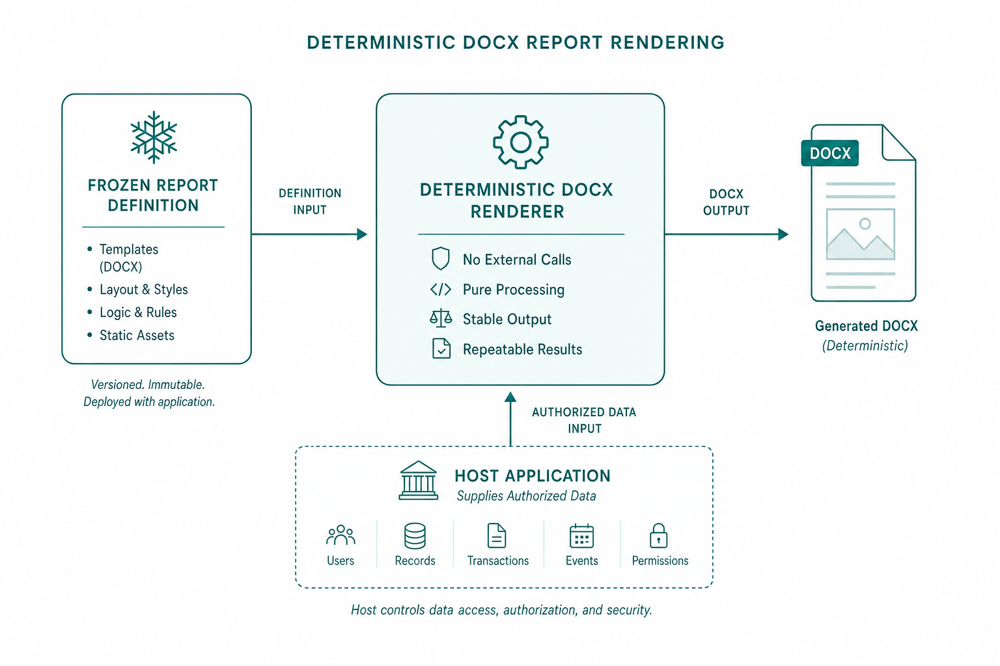

Plan: Close BLI-230 report-engine gaps in Templiqx

Purpose
Close the portable-core gaps between Basenet BLI-230 research and Templiqx’s current proof so CRM3 can run the report-engine PoC with versioned definitions, evidence/custom-field contracts, measurement harnesses, and typed host data ports — without importing OData, retrieval, or legacy multi-format engines into core.
Problem
Templiqx already implements the safe BLI-230 direction (typed contracts → merge_data → deterministic render_document), but research across bli-230-report-engine.md, bli-65-custom-fields.md, bli-60-retrieval-index.md, and gap-analysis-linear-vs-build.md shows missing artifacts: no report-definition entity, no customFields merge contract, no evidence-fragment spec, no determinism/fan-out benches, and underspecified query ports for host OData integration.
Solution
Three gated phases: (1) publish portable specs and extend basenet-legal fixtures; (2) add determinism and fan-out benches in tools/templiqx-bench; (3) introduce DataIntrospectPort / AuthorizedQueryPort traits with fake fixtures and update host-integration docs. Host retains retrieval, approval, DMS, and query execution.
Architecture Diagram
End-to-end shape for official (Option B) output:
flowchart TB
subgraph host["Host Basenet CRM3"]
RET["Retrieval BLI-60"]
AUTH["can + AuthorizedMergeContext"]
QUERY["AuthorizedQueryPort"]
ASM["Merge context assembler"]
end
subgraph templiqx["Templiqx portable core"]
EXT["BLI-61 extract contract"]
DEF["report-definition artifact"]
DRAFT["BLI-62 draft contract"]
REN["render_document"]
BENCH["determinism + fan-out bench"]
end
RET --> ASM
AUTH --> ASM
QUERY --> ASM
ASM --> EXT
EXT --> DRAFT
DEF --> REN
DRAFT --> REN
REN --> BENCH
The model never ships recipient-facing bytes directly in production. Host assembles authorized data; Templiqx validates, drafts typed merge_data, and a frozen definition drives deterministic rendering. Benches prove render-path determinism without model calls.
Scope
In Scope
evidence-fragment/v1alpha1andreport-definition/v1alpha1contractscustomFieldsmerge namespace +basenet-legalfixture extension; locale/number/date formatting (R11)- 100× determinism and 1,000-record fan-out benches
- Typed data-access ports with synthetic fixtures only
- Format-renderer adapters behind the conversion seam: Typst (reports + native charts + pagination → PDF), XLSX (
rust_xlsxwriter, native charts), CSV/XML (thin) — each with renderer-identity + fingerprint evidence - Receipt fingerprint == host
document_version.checksum(SHA-256) shape (R10) - v5 compatibility matrix documentation
Gated / Dropped
- Gated on measured legacy need: RTF (
scrivener-rtf) — build only if evidenced (U10) - Dropped (no demand): standalone chart engine (charts are native to Typst /
rust_xlsxwriter); v5 report-XML output (accounting XML is a separate connector)
Out of Scope (host-owned)
compileToFilter(ADR-0002, unbuilt) — hard prerequisite for authorizedquery/introspectexecution- OData/OpenSearch execution, Docling OCR, DMS lifecycle,
document_versionpersistence + its write-race fix - AI authoring agent + hybrid loop + A/B routing (templiqx supplies
validate/compile/explain/diffguardrails only) - Production CRM3 fixture swap (host workstream)
Requirements Traceability
| Requirement | Source | Plan Coverage | Acceptance Signal |
|---|---|---|---|
| R1 Evidence fragment contract | BLI-60, BLI-68, BLI-61 | Phase 1 / U1 | docs/contracts/evidence-fragment-v1alpha1.md published |
| R2 customFields merge + preflight | BLI-65 | Phase 1 / U2 | Legal eval + compatibility diagnostic for unknown field |
| R3 Report definition artifact | BLI-230 §3 | Phase 1 / U3 | Example dunning-letter-v1.yaml validates |
| R4 100× determinism | BLI-230 §3.5 | Phase 2 / U4 | Bench reports exactly 1 distinct SHA-256 |
| R5 1,000-record fan-out | BLI-230 §3.5 | Phase 2 / U5 | Bench receipt with validity rate |
| R6 Query/introspect ports | BLI-230 §4, BLI-66 | Phase 3 / U6 | cargo test -p templiqx-ports green |
| R7–R8 Docs + matrix | BLI-230 §1–2 | Phase 3 / U7 | just docs-build green |
| R9 Format renderers (Typst / XLSX / CSV / XML) | BLI-230 §1, ADR-0019 | Phase 4 / U8–U9 | Byte-stable PDF + native chart; valid .xlsx with chart |
| R10 Receipt fingerprint == doc-store checksum | BLI-68 | Phase 1 / U1 | SHA-256 shape documented; one integrity concept |
| R11 Locale / number / date formatting | BLI-65, BLI-256 | Phase 4 / U8 | Locale-formatted values in Typst render |
| R12 Host prerequisites documented | ADR-0002, BLI-68 | Phase 3 / U7 | compileToFilter + version-race flagged as tracked deps |
Relevant Files
Existing Files
- existing
examples/crm3/contracts/bli-61-date-term-extraction.yaml— evidence schema reference - existing
examples/packages/basenet-legal/— Legal reference package - existing
crates/templiqx-application/src/authorized_context.rs— host auth binding - existing
tools/templiqx-bench/— performance baseline home - existing
docs/guides/host-integration.md— ownership matrix
New Files
- new
docs/contracts/evidence-fragment-v1alpha1.md— fragment identity spec - new
docs/contracts/report-definition-v1alpha1.md— versioned definition spec - new
examples/packages/basenet-legal/definitions/dunning-letter-v1.yaml— synthetic definition - new
tools/templiqx-bench/src/report_determinism.rs— 100× bench - new
tools/templiqx-bench/src/report_fanout.rs— 1,000-record bench - new
crates/templiqx-ports/src/data_access.rs— introspect/query traits - new
docs/guides/report-engine-compatibility.md— v5 power matrix
Key Decisions
Report definition as package artifact
Versioned YAML in package definitions/ matches Templiqx package model and Option B/hybrid runtime guarantee.
Alternatives considered: Basenet reports.reporttemplate DB entity (host-owned, rejected for portable core).
customFields resolved before render
BLI-65 requires DB-aware assembler at host; template engine and DOCX adapter stay pure.
Alternatives considered: Resolver inside templiqx-docx-v5 (rejected — IO in adapter).
Query ports are traits + fixtures only
Research defaults to OData behind host AuthorizedQueryPort; portable core must not embed query engine. Note: the row-level compileToFilter (ADR-0002) this depends on is unbuilt — the #1 host prerequisite.
Alternatives considered: OData crate in core (rejected — boundary violation).
Formats via specialized Rust crates behind the conversion seam
Typst (reports + native charts + pagination → PDF) is the primary report-style path — leapfrogs deferred DOCX-floor work. rust_xlsxwriter for XLSX with native Excel charts (deterministic; model never emits binary). CSV/XML thin. Charts are native to these crates, not a separate power.
Alternatives considered: docxide-template (rejected — compile-time macro model can't render runtime AI-authored definitions); a standalone chart engine (rejected — no demand); docx-rust noted as an option to harden docx-v5 (BLI-256).
Aggregation in the query layer; billing math upstream
Legacy reports are mostly flat grid-column exports; VAT/interest/legal-aid math (19 golden tests) is owned by the billing domain. templiqx renders pre-computed, pre-aggregated values — no expression/aggregation engine in the portable core.
Receipt fingerprint is the document-store checksum
The templiqx SHA-256 receipt == host document_version.checksum — generated reports land in the existing document-store model (BLI-68). One integrity concept for uploaded + generated docs.
Alternatives considered: a separate report-receipt table (rejected — duplicate integrity concept).
Dependencies and Sequencing
- Phase 1 specs (U1–U3) — no code dependencies; unblocks fixtures and docs
- Phase 2 benches (U4–U5) — depends on U2
basenet-legalmerge fixture - Phase 3 ports + docs (U6–U7) — depends on U1/U2 for assembler handoff text
- Host integration — after U6/U7; Basenet wires real OData and production fragments
Implementation Phases
IMPORTANT: Execute every phase and task step by step, in order.
Status markers: [] idle · [wip] in progress · [x] complete · [f] failed.
[] Phase 1: Portable contracts and fixtures
Publish evidence fragment, customFields merge, and report-definition specs; extend basenet-legal fixture.
1. Evidence fragment spec (U1)
[]Authordocs/contracts/evidence-fragment-v1alpha1.md[]Link fromdocs/README.md
2. CustomFields namespace (U2)
[]Extend legal draft contract and merge fixture with text + relation_link fields[]Add compatibility diagnostic for unknowncustomFields.*
3. Report definition example (U3)
[]Authordocs/contracts/report-definition-v1alpha1.md[]Addexamples/packages/basenet-legal/definitions/dunning-letter-v1.yaml
4. Testing Strategy
Conformance regression; docs build.
[]cargo test -p templiqx-conformance --test crm3 --test cross_opco_outputs[]just docs-build
[] Phase 2: BLI-230 measurement harness
Prove render-path determinism and fan-out viability without model inference.
1. Determinism bench (U4)
[]Implement 100× render loop intools/templiqx-bench[]Assert single distinct output hash
2. Fan-out bench (U5)
[]Add 1,000-record synthetic fixture[]Record validity rate and wall-clock in JSON receipt
3. Testing Strategy
[]cargo run -p templiqx-bench -- report-determinism[]cargo run -p templiqx-bench -- report-fanout
[] Phase 3: Host ports and compatibility matrix
Typed introspect/query ports and v5→Templiqx mapping for host handoff.
1. Data access ports (U6)
[]AddDataIntrospectPortandAuthorizedQueryPorttotempliqx-ports[]Fake adapter intempliqx-localwith synthetic JSON fixtures[]Runscripts/check-boundaries.sh
2. Documentation (U7)
[]Publishdocs/guides/report-engine-compatibility.md[]Updatedocs/guides/host-integration.mdassembler section
3. Testing Strategy
[]just verify
[] Phase 4: Format-renderer adapters
Bring the v5 format surface into templiqx as deterministic adapters behind the conversion seam — no format selector in the portable core.
1. Typst report adapter (U8)
[]Newadapters/templiqx-typst/— contract → Typst markup → PDF (charts, pagination, locale)[]Renderer-identity + fingerprint evidence in the receipt; golden-pinned[]cargo test -p templiqx-conformance --test typst_render
2. XLSX + CSV/XML (U9)
[]Newadapters/templiqx-xlsx/viarust_xlsxwriter(native charts); thin CSV/XML[]cargo test -p templiqx-conformance --test xlsx_render
3. RTF gate + format-scope decision (U10)
[]Measure legacy RTF/XLS/CSV usage; buildscrivener-rtfadapter only if evidenced[]Record final format set + non-claims indocs/guides/report-engine-compatibility.md
4. Testing Strategy
[]Byte-stable re-render (fingerprint pinned); native chart present;check-boundaries.shclean
Validation Commands
[]just verify— fmt, clippy, tests, boundaries, qlty[]cargo test -p templiqx-conformance --test crm3 --test cross_opco_outputs[]cargo run -p templiqx-bench -- report-determinism[]cargo run -p templiqx-bench -- report-fanout[]just docs-build
Test Scenarios
| Scenario | Coverage | Test Location | Expected Result |
|---|---|---|---|
| 100× identical DOCX render | R4 determinism | tools/templiqx-bench |
Exactly 1 distinct SHA-256 |
| 1,000-record fan-out | R5 batch mailing | tools/templiqx-bench |
0 corrupt DOCX; timing recorded |
| Unknown customFields placeholder | R2 preflight | reference_package_claims.rs |
Compatibility report flags field |
| Query without authorized context | R6 port boundary | templiqx-ports tests |
Fail-closed diagnostic |
| CRM3 evidence grounding unchanged | Regression | crates/templiqx-conformance/tests/crm3.rs |
All scenarios green |
Risks and Assumptions
Report-definition scope creep
Approval fields are metadata only; host owns workflow state machine.
Fan-out bench CI flakiness
Keep local-first; optional CI job with generous timeout.
Assumption: OData behind host query port
Research default; port trait remains transport-neutral.
Notes
v5 power coverage (research summary)
| v5 power | Templiqx today | After plan |
|---|---|---|
| Reflective data traversal | Partial (caller-built merge_data) | customFields + query port docs |
| Ad-hoc entity search | Missing (host) | AuthorizedQueryPort trait |
| Transform utils | Bounded contract filters | Unchanged |
| Multi-format render | DOCX V5 + HTML partial | Matrix documents gaps |
Markdown sibling plan: docs/plans/2026-07-16-001-feat-bli-230-report-engine-gaps-plan.md
Amendments
- 2026-07-16 — Report-engine ambition + format strategy. Brought the v5 format surface into scope as deterministic Rust adapters behind the conversion seam: Typst (reports + native charts + pagination → PDF, U8), XLSX via
rust_xlsxwriter(native charts, U9), CSV/XML thin, RTF viascrivener-rtfgated on legacy usage (U10). Rejecteddocxide-template(compile-time vs runtime-authored mismatch); noteddocx-rustfordocx-v5hardening. Dropped standalone chart engine + v5 report-XML. Added Phase 4 and R9–R12. - 2026-07-16 — Research synthesis (BLI-60/63/64/66/68, ADR-0002/0016/0018). Flagged
compileToFilter(ADR-0002) as unbuilt = #1 host prerequisite; pushed aggregation to the query layer with billing math upstream; bound the receipt fingerprint todocument_version.checksum(R10); added locale formatting (R11); recorded host prerequisites (query interface, version-race, authoring agent) and reuse hooks (@blinqx/reports, api-contract, "productions" consumer).